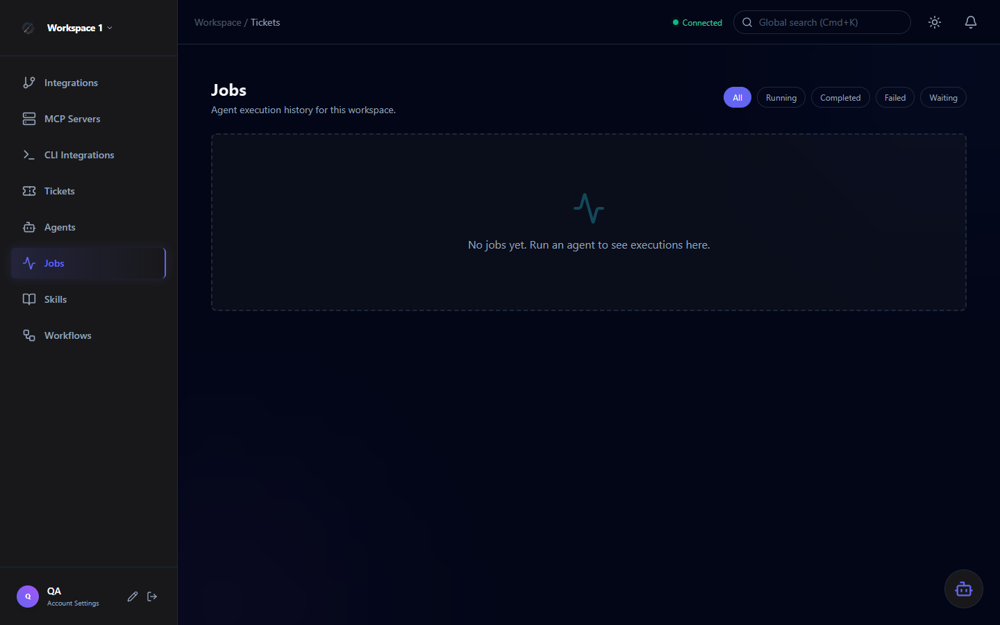

Background Jobs
All agent work in Orchestra runs asynchronously via the dedicated .NET Worker service. The Jobs view provides real-time visibility into execution status, sub-agent interactions, tool calls, and output — with automatic session recovery after service restarts.

Job Lifecycle
Every agent assignment creates a Job. Jobs transition through a well-defined set of states:
| Status | Description |
|---|---|
| Queued | Job created and waiting in the queue for the Worker to pick it up |
| Running | Worker is actively executing the agent. Tool calls and sub-agent interactions are happening now. |
| Waiting | Agent is paused, waiting for an external response (e.g., a CLI sub-agent to complete) |
| Completed | Agent finished successfully. Output and all interaction logs are persisted. |
| Cancelled | User or system cancelled the job before completion |
| Failed | Agent encountered an unrecoverable error. Error details and stack trace are available in the job detail view. |
Real-time Updates via SignalR
The UI connects to the API via SignalR WebSockets. The Worker publishes events to Redis, which the API relays to subscribed clients. This means job status updates appear in the browser without refreshing.
Job status transitions (Queued → Running → Completed) are streamed to the UI in real time as the Worker progresses.
When a job completes or fails, a toast notification appears in the UI — even if you're on a different page within the workspace.
The header shows a live connection status indicator. A green dot means real-time updates are active; reconnection is automatic.
Redis acts as the SignalR scale-out backplane, allowing the API and Worker to publish/subscribe to events independently.
Session Recovery
If the Worker service restarts while jobs are running (e.g., during a deployment), Orchestra automatically resumes interrupted jobs on startup. The Worker scans for any jobs in Running or Waiting state and re-queues them.
Resilient by default: No manual intervention is needed after a service restart. Jobs are persisted in PostgreSQL, so in-progress work is never silently lost — it resumes automatically.
Sub-agent Visualization
Agents can spawn sub-agents during execution (e.g., the Coding Agent may invoke a search sub-agent to explore the codebase before writing code). Each sub-agent interaction is tracked separately and displayed in the job detail view as a nested execution tree.
The job detail shows the full hierarchy of agent → sub-agent interactions, each with its own status, input context, and output.
Every tool invocation is logged with the input parameters and response, giving you full auditability of what the agent did and why.
Final agent output — code, comments, analysis — is stored per job and viewable in the detail panel after execution completes.